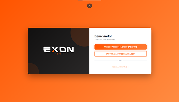
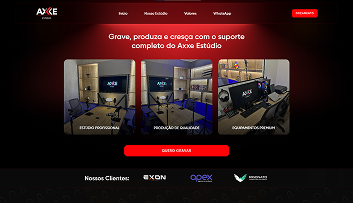
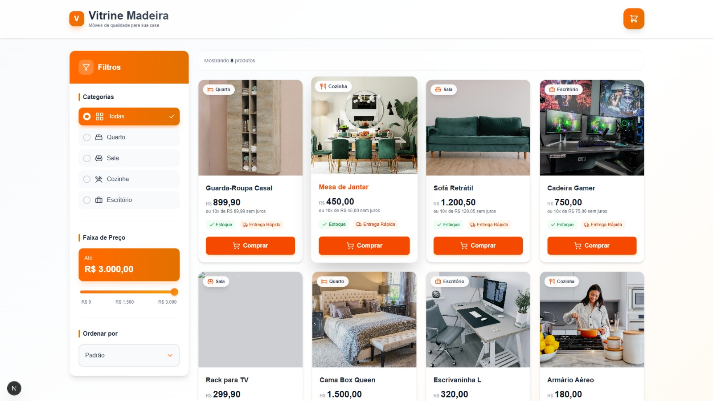

Em transição de carreira, com projetos reais em produção. Foco em Back-End com Node.js, Express e JWT, experiência prática com Docker, PostgreSQL e PHP — incluindo CRM imobiliário em uso ativo.
Comecei criando interfaces e landing pages, mas foi no Back-end que encontrei onde quero crescer. Aprendo resolvendo problemas reais: desenvolvi do zero o CRM Imobiliário da TWK Imóveis, sistema que substituiu planilhas manuais e está em uso ativo.
Tenho experiência prática com Node.js, TypeScript, Express, Prisma e PostgreSQL, comprovada por um teste técnico para vaga junior entregue com autenticação JWT, SOLID e arquitetura Service Pattern. Também trabalho com PHP, MySQL, Docker e automações com IA. Cursando ADS no Senac PR — aberto a estágio ou posição júnior.
Aplicações entregues — de testes técnicos a sistemas em produção ativa.
Teste técnico para vaga júnior: CRUD completo com diferenciação PF/PJ, integração ViaCEP, autenticação JWT, arquitetura Service Pattern e princípios SOLID com TypeScript estrito.

Sistema interno que substituiu controle em planilhas. Gestão de leads e contratos, autenticação com token de sessão, notificações automáticas via WhatsApp e banco de dados relacional estruturado do zero.

Landing page de alta conversão para estúdio audiovisual com back-end PHP, integração MySQL e hospedagem em servidor Linux.

Interface de loja virtual moderna com carrinho inteligente, filtros dinâmicos por categoria/preço e design responsivo. Deploy em produção na Vercel.
Senac PR
Conclusão prevista: Dez/2026. Foco em Engenharia de Software, Modelagem de Dados e Arquitetura de Sistemas.
Tecnologias que utilizo para transformar problemas em soluções.
Minha evolução técnica, dia após dia. Aqui compartilho o que estou aprendendo e construindo.
Desenvolvi uma aplicação completa com CRUD PF/PJ, autenticação JWT, arquitetura Service Pattern e TypeScript estrito. Integrei a API ViaCEP para autopreenchimento de endereço por CEP.
// Validação com Zod + Service Pattern
export const createClient = async (data: CreateClientDTO) => {
const parsed = clientSchema.parse(data);
return prisma.client.create({ data: parsed });
};Entregamos o sistema em uso ativo na TWK Imóveis. Implementei notificações automáticas via WhatsApp e corrigi vulnerabilidades de segurança no sistema de autenticação com token de sessão.
services:
app:
build: .
ports: ["80:80"]
depends_on: [db]
db:
image: mysql:8.0
environment:
MYSQL_DATABASE: crm_imobiliarioDesenvolvi o "Vitrine Madeira", focando em persistência de dados no navegador (LocalStorage) e filtros dinâmicos com TypeScript. Deploy em produção na Vercel.
useEffect(() => {
const saved = localStorage.getItem("cart");
if (saved) setCart(JSON.parse(saved));
}, []);